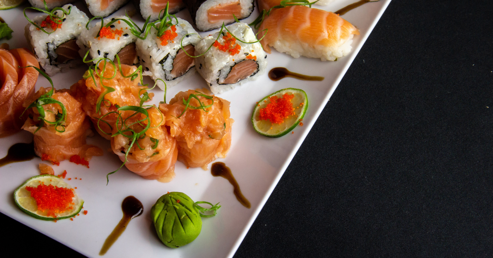
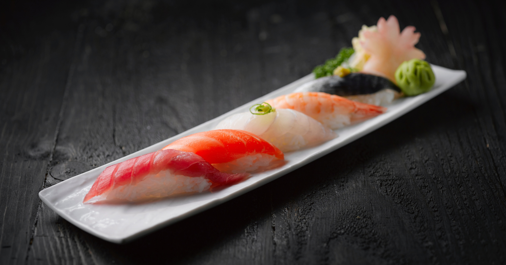
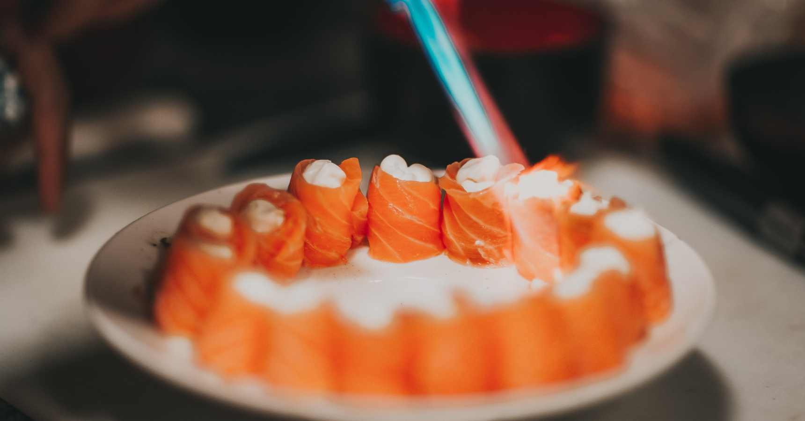
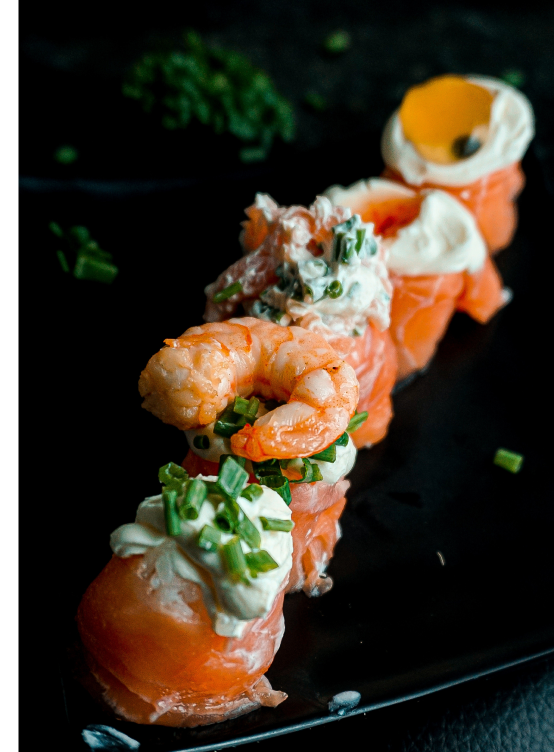
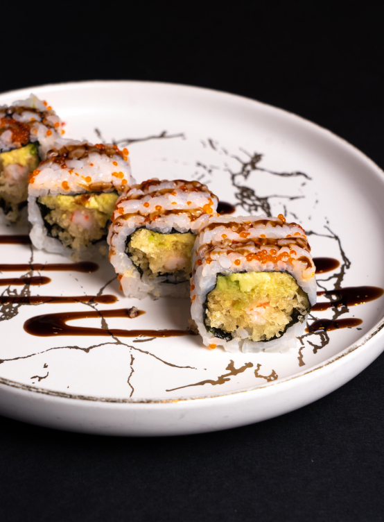
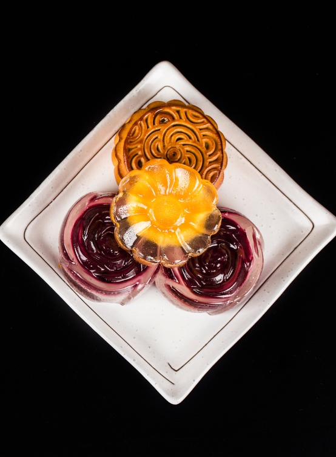
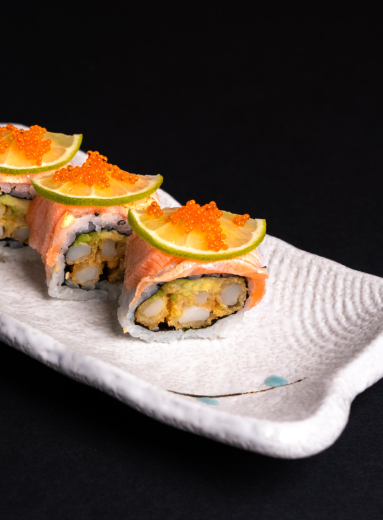

@@include('layout/header_01.html') @@include('layout/banner.html',{ "title":"MENU", "src":"./img/menu_img/menu_headbanner.jpg" })
私廚菜單
menu
單點加購
A la carte

01
名物 私套餐
私覓帶你窺視日式廚藝的精妙，彷如遊歷日本美食之旅」為概念，匯集各式具代表性的料理，如壽司、生魚片、海鮮、天婦羅等，提供在優雅的日式氛圍中自在品嘗道地精緻和食。
私覓帶你窺視日式廚藝的精妙，彷如遊歷日本美食之旅」為概念，匯集各式具代表性的料理，如壽司、生魚片、海鮮、天婦羅等，提供在優雅的日式氛圍中自在品嘗道地精緻和食。
菜單詳情
view

02
極上 會席套餐
以日式料亭的細膩手藝，一刀、一握、一杓為您烹調，體驗「先付、造身、壽司、揚物、烤物、炊合、食事」等演繹的12類主題、感受來自和風的料理與溫度
以日式料亭的細膩手藝，一刀、一握、一杓為您烹調，體驗「先付、造身、壽司、揚物、烤物、炊合、食事」等演繹的12類主題、感受來自和風的料理與溫度
菜單詳情
view

03
苑 春堂套餐
苑 春堂喻意春日裡的花園，如日式庭院般的百盤。彷如聽見富士山河間那潺潺的流水聲，從鮮嫩多汁的富山白蝦，並搭配濃郁的抹茶香與鮮香干貝，感受到府私廚的浪漫
苑 春堂喻意春日裡的花園，如日式庭院般的百盤。彷如聽見富士山河間那潺潺的流水聲，從鮮嫩多汁的富山白蝦，並搭配濃郁的抹茶香與鮮香干貝，感受到府私廚的浪漫
菜單詳情
view
單點加購




菜單詳情
view
@@include('layout/serve.html') @@include('layout/footer.html')